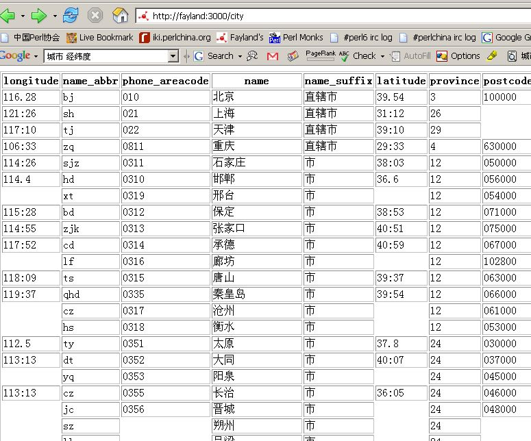
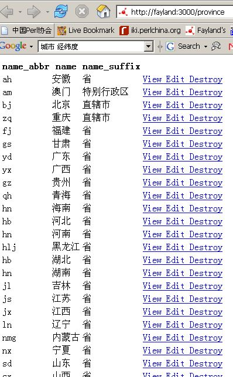

Category: Miscellaneous Keywords: 中国城市资料数据库
在好多天前起了个建立中国城市资料数据库的念头。经过一个晚上好几个小时的奋斗，终于把最简易的“中国城市资料数据库”给弄了个雏形。用 Catalyst 的 Catalyst::Helper::Controller::Scaffold 弄了个最简易的编辑框，然后写了好几份数据解析：从网页上获取数据然后插入到数据库里。两张截图如下：


- 说它是雏形是因为：
- 数据库是不完整的，缺了几个城市，还有很多经纬度
- 里面资料的正确性是无法验证的
或许我可以去 sf.net 建立一个 project. :)数据库可以从 http://www.fayland.org/project/chinacity/chinacities.db (SQLite 数据库) 下走。Enjoy!查看数据库或如何使用该数据库可以访问 http://www.sqlite.org/cvstrac/wiki?p=SqliteTools
查看的可以使用最简单的 SQLiteDatabaseBrowser去睡觉了。See u